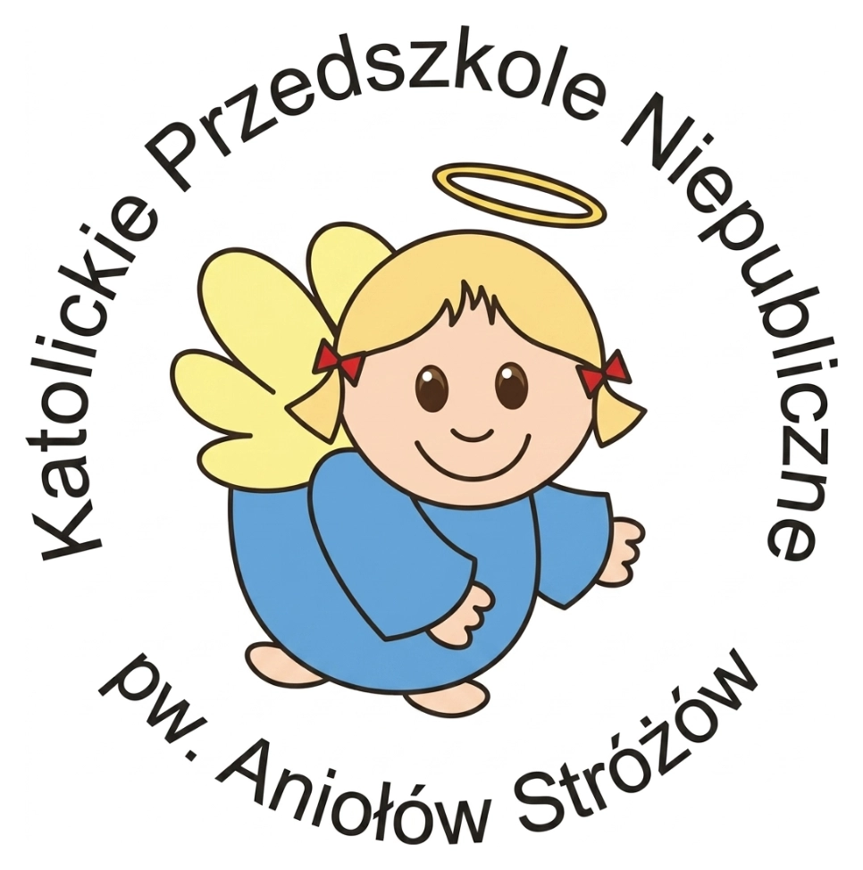

1 / 29
Przedszkole Aniołów Stróżów jest niepublicznym przedszkolem katolickim, wychowującym dzieci w duchu wartości chrześcijańskich.

Przedszkole działa od 2008 roku przy Parafii Błogosławionego Edmunda Bojanowskiego na warszawskim Ursynowie.
Placówka jest prowadzona przez Zgromadzenie Sióstr Służebniczek Najświętszej Maryi Panny Niepokalanie Poczętej. Każde dziecko traktujemy z sercem — z szacunkiem dla jego niepowtarzalnego rytmu rozwoju.
dzieci, które uczęszczały do przedszkola
lat doświadczenia
wycieczek i wydarzeń
osób w gronie personelu
W naszej codziennej pracy z Państwa dziećmi korzystamy z metod i środków wychowawczych zawartych w koncepcji pedagogicznej błogosławionego Edmunda Bojanowskiego.
W duchu wartości chrześcijańskich i patriotycznych — uczymy szacunku, odpowiedzialności i wdzięczności.
Tygodnie tematyczne, eksperymenty i projekty — poznajemy świat, ludzi i naturę przez doświadczenie.
Zabawa swobodna i kierowana — bo dziecko najlepiej uczy się przez radość, ruch i wspólne odkrywanie.
Czytanie, matematyka, kodowanie, język angielski — w rytmie dostosowanym do wieku i ciekawości dziecka.
Codzienne spacery, gimnastyka, zajęcia sportowe i własny plac zabaw — ruch jest dla nas tak ważny jak myśl.
Spokojny rytm dnia — przewidywalny dla dziecka, łączący naukę, zabawę, modlitwę i ruch na świeżym powietrzu.
Spokojny start dnia, swobodne zabawy i powitanie każdego dziecka.
Krótka modlitwa, śniadanie i poranny krąg.
Edukacja, plastyka, język angielski, ruch i zajęcia dodatkowe.
Wyjście na świeże powietrze, a po nim ciepły obiad.
Bajka czytana, leżakowanie dla młodszych, ciche zabawy dla starszych.
Podwieczorek, zajęcia tematyczne i rozchodzenie się dzieci.
Zadaniem wczesnego wychowania nie jest żadna szkolna nauka, lecz nauka życia. Słowa nauki tu nie wystarczą: dzieci nie słowem, lecz życiem uczyć trzeba, jak żyć mają.
herbu Junosza — polski działacz społeczny, twórca ochronek wiejskich, literat, założyciel Zgromadzenia Sióstr Służebniczek Najświętszej Marii Panny, błogosławiony Kościoła katolickiego.
Jego pedagogika oparta na miłości, prostocie i bliskości natury jest dla nas codzienną inspiracją.
Najlepsze rekomendacje przychodzą od rodzin, które powierzyły nam swoje dzieci.
Trafiliśmy do przedszkola Aniołów Stróżów trochę przez przypadek — dziś wiem, że to był jeden z najlepszych wyborów w naszym rodzicielstwie. Córka biegnie tu z uśmiechem.
Siostry mają niezwykły dar — łączą serdeczność i ciepło z naprawdę mądrą pedagogiką. Syn nauczył się tu cierpliwości i samodzielności.
Małe grupy, indywidualne podejście, codzienny ruch i sensowny program. Po trzech latach widzimy, że to przedszkole formuje nie tylko głowę, ale i serce.